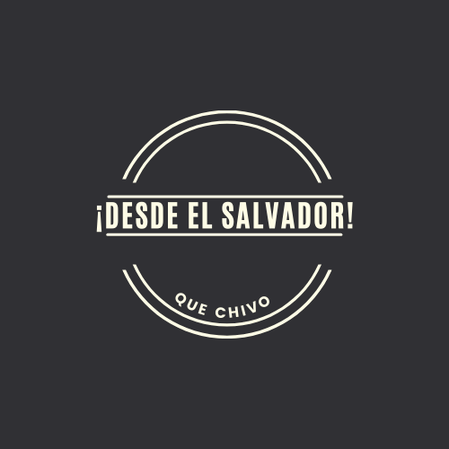
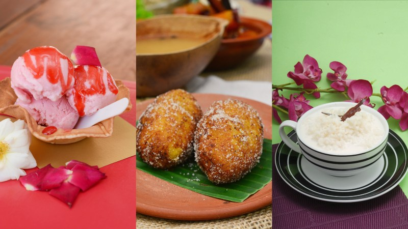
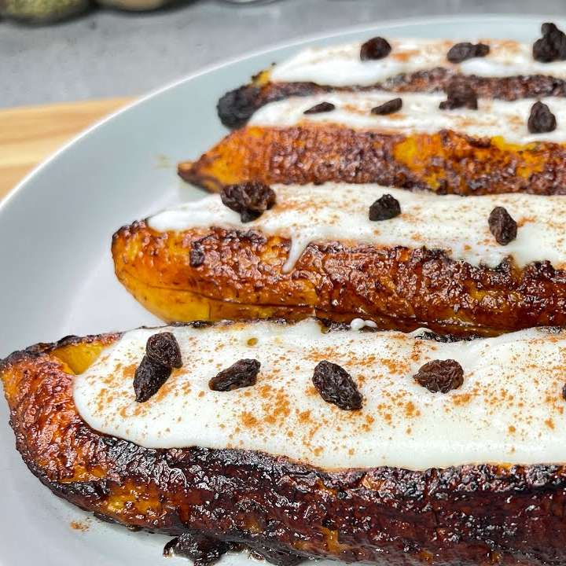

al rededor del mundo hay muchos compatriotras de El salvador que disgustan de deliciosos platillos tipicos El Salvador no solo es reconocido por la laboriosidad de su gente, sus rincones mágicos, sus playas paradisiacas, sus ancestrales tradiciones o sus espectaculares paisajes, también lo es por su impresionante gastronomía, especialmente por sus postres.

Nuestros Productos

los postres tipicos hacen unico a nuestro pulgarcito El salvadpr.
sus precios varian.

lo mejor para hacer tus momentos unicos.
Y deliciosos.